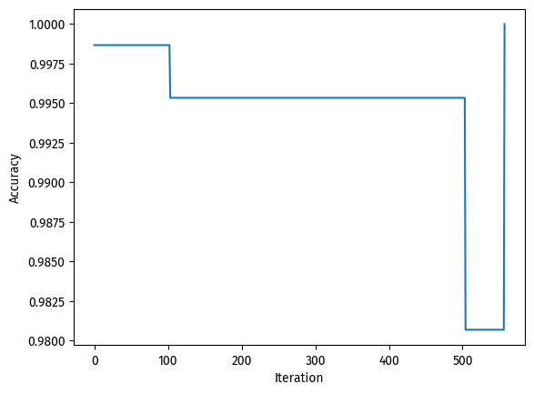

At the cost of ~6 misclassified data points, the algorithm yielded an accuracy of 0.95. Good enough.
Higher dimensions
Finally, we increase the number of features to reach higher dimensions.
Visualization will be vard beyond 3-d, so we will instead look at the score history during training only.
We will be using 8 features (including y) and 1500 data points.
np.random.seed(149)n =1500p_features =7# make centers with correct dimensionsc1 = np.empty(p_features -1)c1.fill(-1.5)c2 = np.empty(p_features -1)c2.fill(1.5)X, y = make_blobs( n_samples=n, n_features=p_features -1, centers=[c1, c2])# Algorithmp = Perceptron()p.fit(X, y, max_steps=1000)# score historyfig = plt.plot(p.history)xlab = plt.xlabel("Iteration")ylab = plt.ylabel("Accuracy")

# scorep.score(X, y)
1.0
On this dataset, our perceptron algorithm reached 100% accuracy!
As for the accuracy during model fitting, the process took more than 500 iterations, but ended up achieving a perfect score at the end.
Because our perceptron converged, we can say that this particular dataset is linearly separable.
Note on complexity
What is the runtime complexity of a single iteration of the perceptron algorithm update as described by Equation 1? Assume that the relevant operations are addition and multiplication. Does the runtime complexity depend on the number of data points n? What about the number of features p?
We can use numpy.ndarray.shape to find out the shape of these variables involved.
# From line 39X_ = np.append(X, np.ones((X.shape[0], 1)), 1)print(f"Shape of self.w is {p.w.shape}")print(f"Shape of y_[i] is {y[0].shape}")print(f"Shape of X_[i] is {X_[0].shape}")
Shape of self.w is (7,)
Shape of y_[i] is ()
Shape of X_[i] is (7,)
We can see that self.w and X_[i] have length p, while y[i] is a single integer.
Therefore, the runtime complexity is O(p) and does not depend on the number of data points n.
By intuition, we do not have to look at all the data points when updating self.w. We only need to do that when determining the score, but that is elsewhere in the function and not described by Equation 1.
{kind=link}